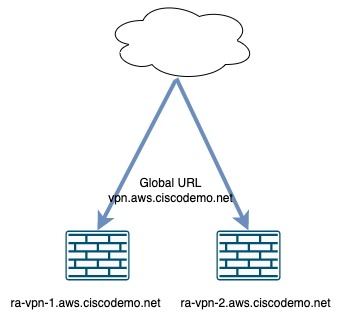
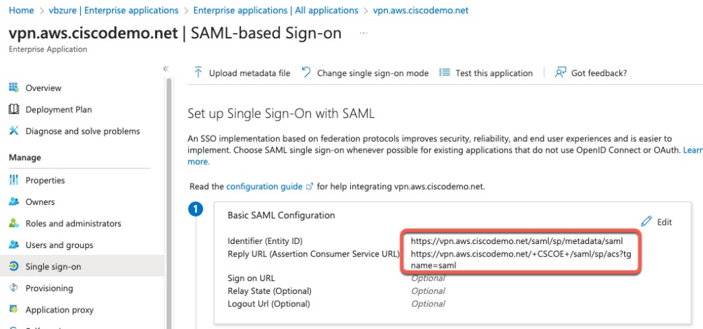
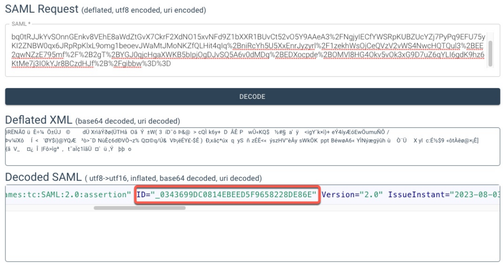
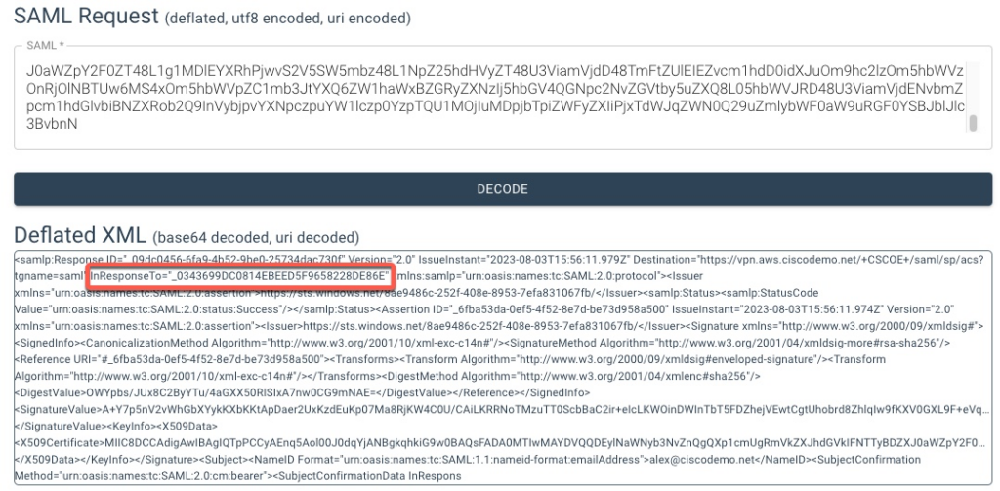
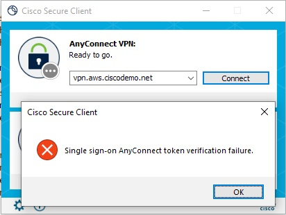
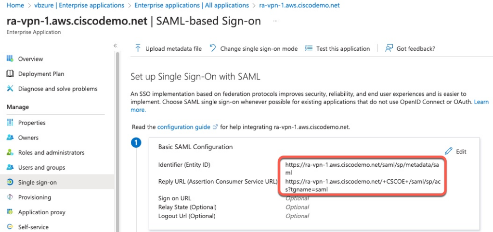
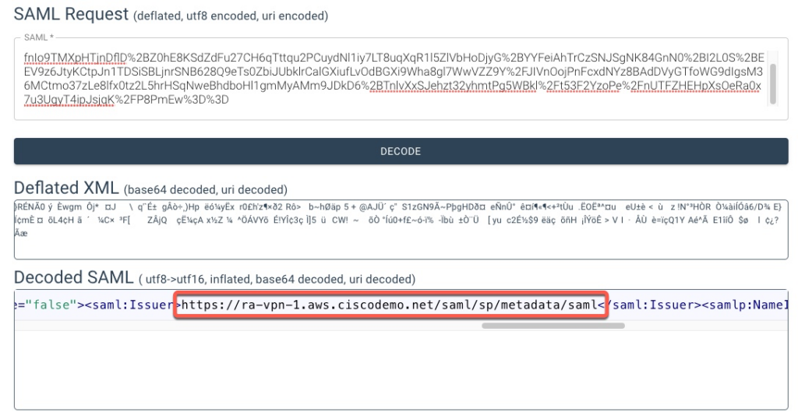
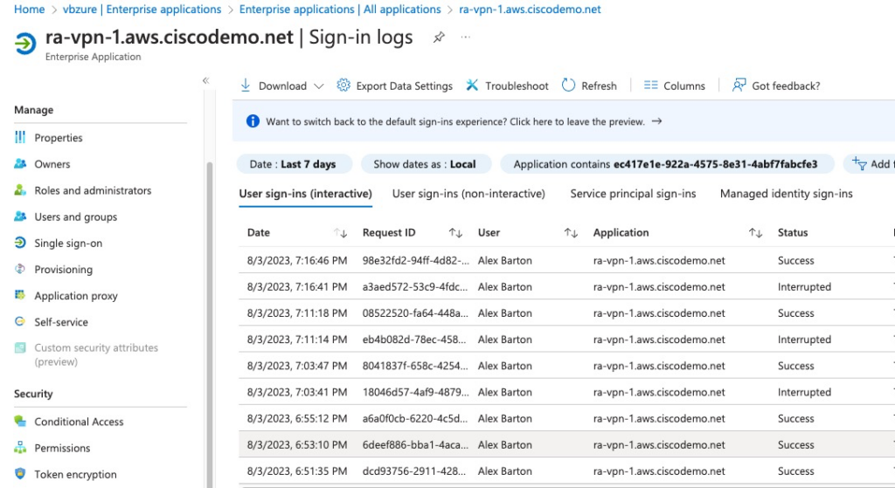

ASA VPN DNS Load Balancing with SAML
Table of Contents
It is very common for customers to place a set of ASA firewalls for remote access behind a single DNS entry.
Specifically, Cisco Secure Client (Anyconnect) client on the users' computers are configured to connect to a single URL and that URL resolves to external IP addresses of different ASA's.
Sometimes, the DNS entry is statically configured with a list of all the ASAs and others use dynamic DNS services to resolve to the ASA nearest to the user based on Geo location.
ASA added support for SAML authentication for back in 9.7 release.
It was shortly found that SAML authentication does not work with DNS-based load balancing. This limitation is described in this enhancement: https://bst.cisco.com/bugsearch/bug/CSCwd09870. The enhancement is now implemented in 9.18.3 code and I will talk about it further in this document.
In this post, I will describe the cause for this incompatibility along with several ways to resolve it.
For SAML IDP, I will use Azure AD.
Topology
For this test topology, there are two ASA firewalls. The firewalls have their individual FQDNs: ra-vpn-1.aws.ciscodemo.net and ra-vpn-2.aws.ciscodemo.net.
There is a global FQDN that points to both IP addresses of these ASA firewalls: vpn.aws.ciscodemo.net.
In all test cases in this post, Secure Client connects to the global FQDN.

Certificates
In all of the solutions in this post, Secure Client connects to vpn.aws.ciscodemo.net as well as ASA's individual FQDNs.
In order for these connections to be successful, the certificate on the ASAs must match the FQDN that the client connects to. In the test topology, the certificate on the ASA is a wildcard with *.aws.ciscodemo.net FQDN.
Subject Alternative Name certificates will also work.
For the first solution described below, VPN Load Balancing, it is possible to assign one certificate for the global FQDN and a different certificate for the individual FQDNs.
SAML Configuration Changes
After making any configuration changes for SAML IDP under the global webvpn section of the ASA configuration, it is necessary to remove that SAML IDP from all tunnel-groups where it's applied and re-apply it.
ra-asa-1# conf t
ra-asa-1(config)# tunnel-group saml webvpn-attributes
ra-asa-1(config-tunnel-webvpn)# no saml identity-provider https://sts.windows.net/8ae9486c-252f-408e-8953-7efa831067fb/
ra-asa-1(config-tunnel-webvpn)# saml identity-provider https://sts.windows.net/8ae9486c-252f-408e-8953-7efa831067fb/
ra-asa-1(config-tunnel-webvpn)# Troubleshooting Methods
ASA Debugging
There are a couple of tools that I will use in troubleshooting SAML authentication.
On the ASA, we can use debug webvpn saml 255 command.
Secure Client
Starting with version 4.10.05095 switched to WebView2 as the default browser. The main goal of this switch was to remove dependence on Internet Explorer.
An additional benefit of this switch is that the client now logs the full URLs that the client access it.
The following shows a snippet of logs extracted from the DART bundle showing these detailed events.
Note that in Secure Client 5.0 and above, these messages are separated into a separate log file under Core folder
******************************************
Date : 08/03/2023
Time : 23:20:13
Type : Information
Source : csc_webhelper
Description : Function: CWebView2BrowserControl::navigationStartingHandler::<lambda_c0d304e701691c6869361fecf389c790>::operator ()
File: C:\temp\build\thehoff\Quicksilver_MR20.384855878117\Quicksilver_MR2\vpn\WebHelper\Windows\WebView2BrowserControl.cpp
Line: 1054
primary control starting navigation to URL 'https://ra-vpn-1.aws.ciscodemo.net/+CSCOE+/saml/sp/login?ctx=526022910%0A&acsamlcap=v2&loc_base_url=https%3A%2F%2Fra%2Dvpn%2D1%2Eaws%2Eciscodemo%2Enet'. Final URL 'https://ra-vpn-1.aws.ciscodemo.net/+CSCOE+/saml_ac_login.html'.
******************************************
Date : 08/03/2023
Time : 23:20:14
Type : Information
Source : csc_webhelper
Description : Function: CWebView2BrowserControl::navigationStartingHandler::<lambda_c0d304e701691c6869361fecf389c790>::operator ()
File: C:\temp\build\thehoff\Quicksilver_MR20.384855878117\Quicksilver_MR2\vpn\WebHelper\Windows\WebView2BrowserControl.cpp
Line: 1054
primary control starting navigation to Redirected URL 'https://login.microsoftonline.com/8ae9486c-252f-408e-8953-7efa831067fb/saml2?SAMLRequest=fVLLTsMwEPyVyPckzqtJraZSaUCqBAgB4sAFGXdDLTl28G5a%2BHvSFKRygOt4Zndm1guUnenFaqCdvYf3AZCCj85YFNNDzQZvhZOoUVjZAQpS4mF1cy3SiIveO3LKGXYm%2BV8hEcGTdpYFm6ZmL7NqnjdZU%2FImbbJidtlkF2vO8zJdFQXPipIFT%2BBx5NdslI8ixAE2FklaGiGeZiGvQp4%2F8kwkuUjSZxY0YwZtJU2qHVGPIo6Ne9M26rTyDl1LzhptIVKuiysJ87yaqTAt0jbMeQVhNS%2BysIRWVlnCZ2X7Gh%2BTpSy4cl7B1FXNyA9wNHQ3ZtJ7qFkrDQJbLo5cMRn1y5%2F1%2B95G8oCR0qjcFjoXWaBpaox93AHJrSQ5AYv4fMDidJ%2FbsclNc%2BeMVp9HF52kv4tOomRC9DZsJ6oYLPagdKthy4KVMe6w9iAJvlPEy9PS3%2F9g%2BQU%3D&RelayState=ctx%3D526022910%250A%26loc_base_url%3Dhttps%253A%252F%252Fra%252Dvpn%252D1%252Eaws%252Eciscodemo%252Enet&is_passive=NULL&entity_id=NULL'. Final URL 'https://ra-vpn-1.aws.ciscodemo.net/+CSCOE+/saml_ac_login.html'.
******************************************
Date : 08/03/2023
Time : 23:20:44
Type : Information
Source : csc_webhelper
Description : Function: CWebView2BrowserControl::navigationStartingHandler::<lambda_c0d304e701691c6869361fecf389c790>::operator ()
File: C:\temp\build\thehoff\Quicksilver_MR20.384855878117\Quicksilver_MR2\vpn\WebHelper\Windows\WebView2BrowserControl.cpp
Line: 1054
primary control starting navigation to URL 'https://vpn.aws.ciscodemo.net/+CSCOE+/saml/sp/acs?tgname=saml'. Final URL 'https://ra-vpn-1.aws.ciscodemo.net/+CSCOE+/saml_ac_login.html'.
******************************************
Date : 08/03/2023
Time : 23:20:46
Type : Information
Source : csc_webhelper
Description : Function: CWebView2BrowserControl::navigationStartingHandler::<lambda_c0d304e701691c6869361fecf389c790>::operator ()
File: C:\temp\build\thehoff\Quicksilver_MR20.384855878117\Quicksilver_MR2\vpn\WebHelper\Windows\WebView2BrowserControl.cpp
Line: 1054
primary control starting navigation to Redirected URL 'https://ra-vpn-1.aws.ciscodemo.net/+CSCOE+/saml/sp/acs?tgname=saml'. Final URL 'https://ra-vpn-1.aws.ciscodemo.net/+CSCOE+/saml_ac_login.html'.
******************************************
Date : 08/03/2023
Time : 23:20:47
Type : Information
Source : csc_webhelper
Description : Function: CWebView2BrowserControl::navigationEndingHandler::<lambda_3401eae6f835b7b07f0c38c4aea4df69>::operator ()
File: C:\temp\build\thehoff\Quicksilver_MR20.384855878117\Quicksilver_MR2\vpn\WebHelper\Windows\WebView2BrowserControl.cpp
Line: 983
primary control navigated successfully to URL 'https://ra-vpn-1.aws.ciscodemo.net/+CSCOE+/saml_ac_login.html'. Final URL 'https://ra-vpn-1.aws.ciscodemo.net/+CSCOE+/saml_ac_login.html'.
******************************************
Date : 08/03/2023
Time : 23:20:47
Type : Information
Source : csc_webhelper
Description : Function: CWebView2BrowserControl::getCookieHandler::<lambda_c0b204df4c6a3d075fb23fcfdff04811>::operator ()
File: C:\temp\build\thehoff\Quicksilver_MR20.384855878117\Quicksilver_MR2\vpn\WebHelper\Windows\WebView2BrowserControl.cpp
Line: 610
primary control sending browser result of 'SuccessWithCookie'
SAML Decoder
This debug will display the content of SAML messages. These messages can be decoded online. The tool I will use for this post is: https://developer.pingidentity.com/en/tools/saml-decoder.html.
Why SAML is failing?
Traditionally and without SAML, when Secure Client initiates a VPN connection to the ASA, the client has a persistent connection with the same ASA. When ASA asks the client for credentials, the client sends back those credentials to the same ASA.
With SAML, authentication request is delegated to the IDP (Azure AD in our case) and, after sucessful authentication, the IDP sends a SAML assertion back to the ASA URL. If case of DNS load balancing, there's a chance that the initial VPN connection starts on one ASA, but the assertion goes to another firewall, the latter firewall will not recognize that assertion.
Azure AD Configuration
In IDP configuration of Azure AD, this global DNS entry is configured as a Reply URL. That means that if a user authenticates successfully to Azure AD, the SAML assertion will be sent to this DNS FQDN.

ASA Configuration
In this example, we have two ASAs with the following SAML configuration
webvpn
saml idp https://sts.windows.net/8ae9486c-252f-408e-8953-7efa831067fb//
url sign-in https://login.microsoftonline.com/8ae9486c-252f-408e-8953-7efa831067fb//saml2
base-url https://vpn.aws.ciscodemo.net
trustpoint idp azure-vpn
trustpoint sp ssl-cert
no signature
force re-authenticationIn this example, vpn.aws.ciscodemo.net points to both ASAs
nslookup vpn.aws.ciscodemo.net
Server: x.y.z
Address: x.y.z#53
Non-authoritative answer:
Name: vpn.aws.ciscodemo.net
Address: 3.x.y.143
Name: vpn.aws.ciscodemo.net
Address: 50.x.y.213Successful Connection
In this example, the initial authentication and the assertion was handled by the same ASA. We can confirm that from the debug output.
This is the initial connection and the redirect to IDP
[SAML] build_authnrequest:
https://login.microsoftonline.com/8ae9486c-252f-408e-8953-7efa831067fb/saml2?SAMLRequest=fVLLTsMwEPyVyPe8m9Sx2kqFBKkSIASIAxdk3A1Ycuzg3fD4e9xUSOUAkk%2Fjmd2ZsVcoBzOK7USv9hbeJkCKPgdjUcwXazZ5K5xEjcLKAVCQEnfbq0tRJJkYvSOnnGEnkv8VEhE8aWdZtGvX7CkrF2XdNO15xvNFd9Z1bXXR1BUvCt52vO5Y9AAeA3%2FNgjyIECfYWSRpKUBZUcYZj7PyPq9EFU75yKI2ZNBW0qx6JRpRpKlxL9omg1beoevJWaMtJMoNKZfQLHit4qIq%2BniRcYh5U5XxEnrJyzyrl%2F1zekhWsOjCeQVzV2vWS4NwcHQTQul3%2BEE2qwNZzE795mf%2F%2B2gT%2BYGJ0qjcHgaXWKB5bIpjOgDJvSQ5A6v0dMDq%2BEDXocpde%2BOMVl8HG4Okv5vOk3xG9D7uZ6qYLI6gdK9hz6KtMe7j3IOkYJr8BCzdHJf%2B%2Fgibbw%3D%3D
And this is the assertion
[SAML] consume_assertion:
PHNhbWxwOlJlc3BvbnNlIElEPSJfMDlkYzA0NTYtNmZhOS00YjUyLTliZTAtMjU3MzRkYWM3MzBmIiBWZXJzaW9uPSIyLjAiIElzc3VlSW5zdGFudD0iMjAyMy0wOC0wM1QxNTo1NjoxMS45NzlaIiBEZXN0aW5hdGlvbj0iaHR0cHM6Ly92cG4uYXdzLmNpc2NvZGVtby5uZXQvK0NTQ09FKy9zYW1sL3NwL2Fjcz90Z25hbWU9c2FtbCIgSW5SZXNwb25zZVRvPSJfMDM0MzY5OURDMDgxNEVCRUVENUY5NjU4MjI4REU4NkUiIHhtbG5zOnNhbWxwPSJ1cm46b2FzaXM6bmFtZXM6dGM6U0FNTDoyLjA6cHJvdG9jb2wiPjxJc3N1ZXIgeG1sbnM9InVybjpvYXNpczpuYW1lczp0YzpTQU1MOjIuMDphc3NlcnRpb24iPmh0dHBzOi8vc3RzLndpbmRvd3MubmV0LzhhZTk0ODZjLTI1MmYtNDA4ZS04OTUzLTdlZmE4MzEwNjdmYi88L0lzc3Vlcj48c2FtbHA6U3RhdHVzPjxzYW1scDpTdGF0dXNDb2RlIFZhbHVlPSJ1cm46b2FzaXM6bmFtZXM6dGM6U0FNTDoyLjA6c3RhdHVzOlN1Y2Nlc3MiLz48L3NhbWxwOlN0YXR1cz48QXNzZXJ0aW9uIElEPSJfNmZiYTUzZGEtMGVmNS00ZjUyLThlN2QtYmU3M2Q5NThhNTAwIiBJc3N1ZUluc3RhbnQ9IjIwMjMtMDgtMDNUMTU6NTY6MTEuOTc0WiIgVmVyc2lvbj0iMi4wIiB4bWxucz0idXJuOm9hc2lzOm5hbWVzOnRjOlNBTUw6Mi4wOmFzc2VydGlvbiI+PElzc3Vlcj5odHRwczovL3N0cy53aW5kb3dzLm5ldC84YWU5NDg2Yy0yNTJmLTQwOGUtODk1My03ZWZhODMxMDY3ZmIvPC9Jc3N1ZXI+PFNpZ25hdHVyZSB4bWxucz0iaHR0cDovL3d3dy53My5vcmcvMjAwMC8wOS94bWxkc2lnIyI+PFNpZ25lZEluZm8+PENhbm9uaWNhbGl6YXRpb25NZXRob2QgQWxnb3JpdGhtPSJodHRwOi8vd3d3LnczLm9yZy8yMDAxLzEwL3htbC1leGMtYzE0biMiLz48U2lnbmF0dXJlTWV0aG9kIEFsZ29yaXRobT0iaHR0cDovL3d3dy53My5vcmcvMjAwMS8wNC94bWxkc2lnLW1vcmUjcnNhLXNoYTI1NiIvPjxSZWZlcmVuY2UgVVJJPSIjXzZmYmE1M2RhLTBlZjUtNGY1Mi04ZTdkLWJlNzNkOTU4YTUwMCI+PFRyYW5zZm9ybXM+PFRyYW5zZm9ybSBBbGdvcml0aG09Imh0dHA6Ly93d3cudzMub3JnLzIwMDAvMDkveG1sZHNpZyNlbnZlbG9wZWQtc2lnbmF0dXJlIi8+PFRyYW5zZm9ybSBBbGdvcml0aG09Imh0dHA6Ly93d3cudzMub3JnLzIwMDEvMTAveG1sLWV4Yy1jMTRuIyIvPjwvVHJhbnNmb3Jtcz48RGlnZXN0TWV0aG9kIEFsZ29yaXRobT0iaHR0cDovL3d3dy53My5vcmcvMjAwMS8wNC94bWxlbmMjc2hhMjU2Ii8+PERpZ2VzdFZhbHVlPk9XWXBicy9KVXg4QzJCeVlUdS80YUdYWDUwUklTSXhBN253MENHOW1OQUU9PC9EaWdlc3RWYWx1ZT48L1JlZmVyZW5jZT48L1NpZ25lZEluZm8+PFNpZ25hdHVyZVZhbHVlPkErWTdwNW5WMnZXaEdiWFl5a0tYYktLdEFwRGFlcjJVeEt6ZEV1S3AwN01hOFJqS1c0QzBVL0NBaUxLUlJOb1RNenVUVDBTY2JCYUMyaXIrZUljTEtXT2luRFdJblRiVDVGRFpoZWpWRXd0Q2d0VWhvYnJkOFpobHFJdzlmS1hWMEdYTDlGK2VWcVRpSm1IbGNOYjd1QkF0b0lPYzRKZ2xIV1JPbzZUeFFVNjZxYXpnRWNORzZaRDlXL2k0blRFUDFodi9Uc1Z1YjVsT2N0Z2Y0QnYvT241RUNtdXpkK1BrazB1cHhwUHdOWHN2TThTTmNwNDlJOHNMKytaWHlDTkpaMkR5WDgvVlNOMy9JWFNQRHk2SHE1bGVHOTcyeTU0NTRoTThzdTRJR2JFbWVRTFdrSThFWVMwQ1dzcWYrN0VTUmpFMXgrazdCbjBsZ1NISUdQTkFadz09PC9TaWduYXR1cmVWYWx1ZT48S2V5SW5mbz48WDUwOURhdGE+PFg1MDlDZXJ0aWZpY2F0ZT5NSUlDOERDQ0FkaWdBd0lCQWdJUVRwUENDeUFFbnE1QW9sMDBKMGRxWWpBTkJna3Foa2lHOXcwQkFRc0ZBREEwTVRJd01BWURWUVFERXlsTmFXTnliM052Wm5RZ1FYcDFjbVVnUm1Wa1pYSmhkR1ZrSUZOVFR5QkRaWEowYVdacFkyRjBaVEFlRncweU16QTNNall3TkRBeU5UbGFGdzB5TmpBM01qWXdOREF5TlRsYU1EUXhNakF3QmdOVkJBTVRLVTFwWTNKdmMyOW1kQ0JCZW5WeVpTQkdaV1JsY21GMFpXUWdVMU5QSUVObGNuUnBabWxqWVhSbE1JSUJJakFOQmdrcWhraUc5dzBCQVFFRkFBT0NBUThBTUlJQkNnS0NBUUVBcTdNQVVReER3SHRaQUdaZHpUYU9EcVhVKzltMVhVVU1tbGVveXFpalBzVnFULzlMRUtPaXdsanpHTjYycXBFeUpYM0I0MndQRWNYdHpTN2c5ZWtRM1p1dlBwZE9VclRnRlJOM0RpdWJURHAzY1ZnZXVjNW5URzZ3K1llVitManJ4WHRZUmNTZGpwMjNxOFdNbG9WL2ViZFovVDRpVVpYb24zN2dXbVNleVVQa0ZjYkZoM0gxM1pmRmtXRm53ZGM4ZW0rVWp3U0tONWVOQTBFamlJd0ZxbHFNT2x0cWxMM2NTWUlnQ0ZjWXlUMGpiNmJueFgyK2pTOGhGNE5IVkhURzU0cVdUVFlGRGI3T1o3U3NpRkphazJWeVFTTzc2S2RSbDNuUm5VRFlSL0RrL0I2Ynd2T2ZQSXhQL2szczdLYmhLbWhUVDBGSGtUTFgrMjNlbkp1TTJRSURBUUFCTUEwR0NTcUdTSWIzRFFFQkN3VUFBNElCQVFBblpJTkdEYkJTNXNidmdFeTF2Vkxwc2l6Tk5va0x4dDBwajlJQ2hvbjJ0Y0oxUG9TaEthZVhqY0JUVi9ZRVphWVpaT2RPSnR6aUE3WEM2b3NjNmgzUFhjR0dua2s5ckNoUVRlSml6cUJ1bFBQem8xd0RlejEyK2JWVHBGUEYxMkdhWXd5Ny9TVFhIQWJsQ29icENIalZZYVVHRXVzUFEwQmtJYmQxNXZuenU0Z2E2VHA1SVkxMkNnL1JtNlZFKzhtMkJwRzNQY1hCakJjYkdWcHNmVzNEOFhzRitId0RBd1A4OVdUcnZ5WUIxdDVMeUo0cjlVdGpQbFRLMHlKSmh0bG5EamFkd25nL1J4UWYrbElySjBBdmE3SVVNalNYRTJXaEo1S0RmNzZ2ZjVpa2wxSElTL3BFTWpNVWJ0ck1mOHcrK2pUaTZabk02SkU1Q01NMnlHR2s8L1g1MDlDZXJ0aWZpY2F0ZT48L1g1MDlEYXRhPjwvS2V5SW5mbz48L1NpZ25hdHVyZT48U3ViamVjdD48TmFtZUlEIEZvcm1hdD0idXJuOm9hc2lzOm5hbWVzOnRjOlNBTUw6MS4xOm5hbWVpZC1mb3JtYXQ6ZW1haWxBZGRyZXNzIj5hbGV4QGNpc2NvZGVtby5uZXQ8L05hbWVJRD48U3ViamVjdENvbmZpcm1hdGlvbiBNZXRob2Q9InVybjpvYXNpczpuYW1lczp0YzpTQU1MOjIuMDpjbTpiZWFyZXIiPjxTdWJqZWN0Q29uZmlybWF0aW9uRGF0YSBJblJlc3BvbnNAug 03 15:55:57 [SAML] NotBefore:2023-08-03T15:51:11.811Z NotOnOrAfter:2023-08-03T16:56:11.811Z timeout: 0
Aug 03 15:55:57 [SAML] consume_assertion: <Session xmlns="http://www.entrouvert.org/namespaces/lasso/0.0" Version="2"><Assertion RemoteProviderID="https://sts.windows.net/8ae9486c-252f-408e-8953-7efa831067fb/"><Assertion xmlns="urn:oasis:names:tc:SAML:2.0:assertion" xmlns:samlp="urn:oasis:names:tc:SAML:2.0:protocol" ID="_6fba53da-0ef5-4f52-8e7d-be73d958a500" IssueInstant="2023-08-03T15:56:11.974Z" Version="2.0"><Issuer>https://sts.windows.net/8ae9486c-252f-408e-8953-7efa831067fb/</Issuer><Signature xmlns="http://www.w3.org/2000/09/xmldsig#"><SignedInfo><CanonicalizationMethod Algorithm="http://www.w3.org/2001/10/xml-exc-c14n#"/><SignatureMethod Algorithm="http://www.w3.org/2001/04/xmldsig-more#rsa-sha256"/><Reference URI="#_6fba53da-0ef5-4f52-8e7d-be73d958a500"><Transforms><Transform Algorithm="http://www.w3.org/2000/09/xmldsig#enveloped-signature"/><Transform Algorithm="http://www.w3.org/2001/10/xml-exc-c14n#"/></Transforms><DigestMethod Algorithm="http://www.w3.org/2001/04/xmlenc#sha256"/><DigestValue>OWYpbs/JUx8C2ByYTu/4aGXX50RISIxA7nw0CG9mNAE=</DigestValue></Reference></SignedInfo><SignatureValue>A+Y7p5nV2vWhGbXYykKXbKKtApDaer2UxKzdEuKp07Ma8RjKW4C0U/CAiLKRRNoTMzuTT0ScbBaC2ir+eIcLKWOinDWInTbT5FDZhejVEwtCgtUhobrd8ZhlqIw9fKXV0GXL9F+eVqTiJmHlcNb7uBAtoIOc4JglHWROo6TxQU66qazgEcNG6ZD9W/i4nTEP1hv/TsVub5lOctgf4Bv/On5ECmuzd+Pkk0upxpPwNXsvM8SNcp49I8sL++ZXyCNJZ2DyX8/VSN3/IXSPDy6Hq5leG972y5454hM8su4IGbEmeQLWkI8EYS0CWsqf+7ESRjE1x+k7Bn0lgSHIGPNAZw==</SignatureValue><KeyInfo><X509Data><X509Certificate>MIIC8DCCAdigAwIBAgIQTpPCCyAEnq5Aol00J0dqYjANBgkqhkiG9w0BAQsFADA0MTIwMAYDVQQDEylNaWNyb3NvZnQgQXp1cmUgRmVkZXJhdGVkIFNTTyBDZXJ0aWZpY2F0ZTAeFw0yMzA3MjYwNDAyNTlaFw0yNjA3MjYwNDAyNTlaMDQxMjAwBgNVBAMTKU1pY3Jvc29mdCBBenVyZSBGZWRlcmF0ZWQgU1NPIENlcnRpZmljYXRlMIIBIjANBgkqhkiG9w0BAQEFAAOCAQ8AMIIBCgKCAQEAq7MAUQxDwHtZAGZdzTaODqXU+9m1XUUMmleoyqijPsVqT/9LEKOiwljzGN62qpEyJX3B42wPEcXtzS7g9ekQ3ZuvPpdOUrTgFRN3DiubTDp3cVgeuc5nTG6w+YeV+LjrxXtYRcSdjp23q8WMloV/ebdZ/T4iUZXon37gWmSeyUPkFcbFh3H13ZfFkWFnwdc8em+UjwSKN5eNA0EjiIwFqlqMOltqlL3cSYIgCFcYyT0jb6bnxX2+jS8hF4NHVHTG54qWTTYFDb7OZ7SsiFJak2VyQSO76KdRl3nRnUDYR/Dk/B6bwvOfPIxP/k3s7KbhKmhTT0FHkTLX+23enJuM2QIDAQABMA0GCSqGSIb3DQEBCwUAA4IBAQAnZINGDbBS5sbvgEy1vVLpsizNNokLxt0pj9IChon2tcJ1PoShKaeXjcBTV/YEZaYZZOdOJtziA7XC6osc6h3PXcGGnkk9rChQTeJizqBulPPzo1wDez12+bVTpFPF12GaYwy7/STXHAblCobpCHjVYaUGEusPQ0BkIbd15vnzu4ga6Tp5IY12Cg/Rm6VE+8m2BpG3PcXBjBcbGVpsfW3D8XsF+HwDAwP89WTrvyYB1t5LyJ4r9UtjPlTK0yJJhtlnDjadwng/RxQf+lIrJ0Ava7IUMjSXE2WhJ5KDf76vf5ikl1HIS/pEMjMUbtrMf8w++jTi6ZnM6JE5CMM2yGGk</X509Certificate></X509Data></KeyInfo></Signature><Subject><NameID Format="urn:oasis:names:tc:SAML:1.1:nameid-format:emailAddress">alex@ciscodemo.net</NameID><SubjectConfirmation Method="urn:oasis:names:tc:SAML:2.0:cm:bearer"><SubjectConfirmationData InResponseTo="_0343699DC0814EBEED5F9658228DE86E" NotOnOrAfter="2023-08-03T16:56:11.811Z" Recipient="https://vpn.aws.ciscodemo.net/+CSCOE+/saml/sp/acs?tgname=saml"/></SubjectConfirmation></Subject><Conditions NotBefore="2023-08-03T15:51:11.811Z" NotOnOrAfter="2023-08-03T16:56:11.811Z"><AudienceRestriction><Audience>https://vpn.aws.ciscodemo.net/saml/sp/metadata/saml</Audience></AudienceRestriction></Conditions><AttributeStatement><Attribute Name="http://schemas.microsoft.com/identity/claims/tenantid"><AttributeValue>8ae9486c-252f-408e-8953-7efa831067fb</AttributeValue></Attribute><Attribute Name="http://schemas.microsoft.com/identity/claims/objectidentifier"><AttributeValue>c92e0985-7f93-4ad2-b2af-9f1e2d282028</AttributeValue></Attribute><Attribute Name="http://schemas.microsoft.com/identity/claims/displayname"><AttributeValue>Alex Barton</AttributeValue></Attribute><Attribute Name="http://schemas.microsoft.com/identity/claims/identityprovider"><AttributeValue>https://sts.windows.net/8ae9486c-252f-408e-8953-7efa831067fb/</AttributeValue></Attribute><Attribute Name="http://schemas.microsoft.com/claims/authnmethodsreferences"><AttributeValue>http://schemas.microsoft.com/ws/2008/06/identity/authenticationmethod/password</AttributeValue></Attribute><Attribute Name="http://schemas.xmlsoap.org/ws/2005/0Aug 03 15:55:57
[SAML] consume_assertion:
https://sts.windows.net/8ae9486c-252f-408e-8953-7efa831067fb/ alex@ciscodemo.net
[saml] webvpn_login_primary_username: SAML assertion validation succeeded
Start timer for verifying token 469AC9583EF4DE3B0DB67CC
Username "alex@ciscodemo.net" added to list with token 469AC9583EF4DE3B0DB67CC
saml_auth_is_valid_token: SAML ac token being looked 469AC9583EF4DE3B0DB67CC
saml_ac_v2_process_auth_request: SAML ac token being looked 469AC9583EF4DE3B0DB67CC
SAML AUTH: authentication success
saml_ac_token_entry_reset_saml_session: SAML ac token being looked 469AC9583EF4DE3B0DB67CC We can see that authentication was successful.
If we decode the initial authentication request, we can find the request ID

And in the assertion, we can see the same ID coming back.

Failing Connection
In this example, the initial authentication goes to one ASA, but the assertion goes to another.
This is the initial request and the subsequent failed attempt to lookup a session.
[SAML] build_authnrequest:
https://login.microsoftonline.com/8ae9486c-252f-408e-8953-7efa831067fb/saml2?SAMLRequest=fVLLTsMwEPyVyPe8m9ax0kopbaVKgBAgDlyQcTfUkmMH76aFvydNVakc4Dqe2Z2ZdYWyNZ2oe9rbR%2FjsASn4ao1FMT7MWe%2BtcBI1CitbQEFKPNV3tyKLEtF5R045w64k%2FyskInjSzrJgu5qzN75O%2BXo5yep6VfNiNl1veFEuE17Wk7IukpwFL%2BBx4M%2FZIB9EiD1sLZK0NEBJlocJD5P8OZ2KLBf57JUFqyGDtpJG1Z6oQxHHxn1oG7VaeYeuIWeNthAp18ZcQjnhUxVmRdaEk4RDyMsiD2fQSJ6nyXTWvMenZBkLNs4rGLuas0YahJOjhyGUPsAFWVQnshid%2BsVl%2F6GzkTxipDQqt4PWRRZoHBtjF7dAcidJjkAVXw%2Bozge6H6rcrh6c0er7ZKOV9HfTaZSOiN6FzUgVvcUOlG407FhQG%2BOONx4kDabJ98DixXnp74%2Bw%2BAE%3D
[SAML] saml_is_idp_internal: getting SAML config for tg saml
SAML AUTH: SAML hash table cleanup periodic task
saml_ac_v2_process_auth_request: SAML ac token being looked 678C3CEB128A683A18AA036
SAML AUTH: authentication failure due to ac token verification failureThe other ASA reports a successful SAML assertion, but it simply purges it out since the initial connection from the client started somewhere else.
[SAML] consume_assertion:
PHNhbWxwOlJlc3BvbnNlIElEPSJfOWZlOWFlYjAtYWNiMS00ZDIyLWI3ODItNjBhNzYwNGFmYWFkIiBWZXJzaW9uPSIyLjAiIElzc3VlSW5zdGFudD0iMjAyMy0wOC0wM1QxNjoyNDowMS4xMzVaIiBEZXN0aW5hdGlvbj0iaHR0cHM6Ly92cG4uYXdzLmNpc2NvZGVtby5uZXQvK0NTQ09FKy9zYW1sL3NwL2Fjcz90Z25hbWU9c2FtbCIgSW5SZXNwb25zZVRvPSJfOEUxOEVCNDJBQURBODU3NkVGODU5QjA4OUE0OUE1MDMiIHhtbG5zOnNhbWxwPSJ1cm46b2FzaXM6bmFtZXM6dGM6U0FNTDoyLjA6cHJvdG9jb2wiPjxJc3N1ZXIgeG1sbnM9InVybjpvYXNpczpuYW1lczp0YzpTQU1MOjIuMDphc3NlcnRpb24iPmh0dHBzOi8vc3RzLndpbmRvd3MubmV0LzhhZTk0ODZjLTI1MmYtNDA4ZS04OTUzLTdlZmE4MzEwNjdmYi88L0lzc3Vlcj48c2FtbHA6U3RhdHVzPjxzYW1scDpTdGF0dXNDb2RlIFZhbHVlPSJ1cm46b2FzaXM6bmFtZXM6dGM6U0FNTDoyLjA6c3RhdHVzOlN1Y2Nlc3MiLz48L3NhbWxwOlN0YXR1cz48QXNzZXJ0aW9uIElEPSJfZDJlZTE1OTctNDVjNi00ZGJlLTk2OTgtMzg1N2RjOGYzYzAwIiBJc3N1ZUluc3RhbnQ9IjIwMjMtMDgtMDNUMTY6MjQ6MDEuMTI3WiIgVmVyc2lvbj0iMi4wIiB4bWxucz0idXJuOm9hc2lzOm5hbWVzOnRjOlNBTUw6Mi4wOmFzc2VydGlvbiI+PElzc3Vlcj5odHRwczovL3N0cy53aW5kb3dzLm5ldC84YWU5NDg2Yy0yNTJmLTQwOGUtODk1My03ZWZhODMxMDY3ZmIvPC9Jc3N1ZXI+PFNpZ25hdHVyZSB4bWxucz0iaHR0cDovL3d3dy53My5vcmcvMjAwMC8wOS94bWxkc2lnIyI+PFNpZ25lZEluZm8+PENhbm9uaWNhbGl6YXRpb25NZXRob2QgQWxnb3JpdGhtPSJodHRwOi8vd3d3LnczLm9yZy8yMDAxLzEwL3htbC1leGMtYzE0biMiLz48U2lnbmF0dXJlTWV0aG9kIEFsZ29yaXRobT0iaHR0cDovL3d3dy53My5vcmcvMjAwMS8wNC94bWxkc2lnLW1vcmUjcnNhLXNoYTI1NiIvPjxSZWZlcmVuY2UgVVJJPSIjX2QyZWUxNTk3LTQ1YzYtNGRiZS05Njk4LTM4NTdkYzhmM2MwMCI+PFRyYW5zZm9ybXM+PFRyYW5zZm9ybSBBbGdvcml0aG09Imh0dHA6Ly93d3cudzMub3JnLzIwMDAvMDkveG1sZHNpZyNlbnZlbG9wZWQtc2lnbmF0dXJlIi8+PFRyYW5zZm9ybSBBbGdvcml0aG09Imh0dHA6Ly93d3cudzMub3JnLzIwMDEvMTAveG1sLWV4Yy1jMTRuIyIvPjwvVHJhbnNmb3Jtcz48RGlnZXN0TWV0aG9kIEFsZ29yaXRobT0iaHR0cDovL3d3dy53My5vcmcvMjAwMS8wNC94bWxlbmMjc2hhMjU2Ii8+PERpZ2VzdFZhbHVlPnZOZ0xGTmVoc3hObDdiQmJlaWtuMDhEMitEdkZWK1FNSGJuK1JRSGoxalE9PC9EaWdlc3RWYWx1ZT48L1JlZmVyZW5jZT48L1NpZ25lZEluZm8+PFNpZ25hdHVyZVZhbHVlPmVJbVRCYWI5YlFhZnMzZXkzUXh3TUZLU1lkUzgwRHh6d05PR2F2TURoRCt2c0tFUzlYY3JPY0ZCV2o1dDhMeG05bHcrMDd6ajlCeFZobnU0WWJwRG5mdVNmQXF1NkpML0FqNnB6am14c0NTUFdUR2RQOWRKazFWRkFJMmN1MUozQVIrQTFDWjE4dHdxSmM3MFFSNmVlQmtkbFkxNmxWN0c4QW9UdFNMNnJzOXd3aWlOWVk0OGJEZUNlaWNJaTExMGxTK1pDb0EzeFJwNEc0bk9EaDlWbzl4TkFWY01hUmdKclRuL3VyTnNDeVJ4Zm82ZUdVbkliT0dKdVRKellLcTlISnpHWHcwTHRhbERJY3JSeFZjbklra0lYMC9pcXN0dEpyR2VUV2o5STM1YlJ2ZzNlc01jeE1EMzliWHVrd2NkWG85MkgrNWkyVmZ6Zlh5cGk4b1N5Zz09PC9TaWduYXR1cmVWYWx1ZT48S2V5SW5mbz48WDUwOURhdGE+PFg1MDlDZXJ0aWZpY2F0ZT5NSUlDOERDQ0FkaWdBd0lCQWdJUVRwUENDeUFFbnE1QW9sMDBKMGRxWWpBTkJna3Foa2lHOXcwQkFRc0ZBREEwTVRJd01BWURWUVFERXlsTmFXTnliM052Wm5RZ1FYcDFjbVVnUm1Wa1pYSmhkR1ZrSUZOVFR5QkRaWEowYVdacFkyRjBaVEFlRncweU16QTNNall3TkRBeU5UbGFGdzB5TmpBM01qWXdOREF5TlRsYU1EUXhNakF3QmdOVkJBTVRLVTFwWTNKdmMyOW1kQ0JCZW5WeVpTQkdaV1JsY21GMFpXUWdVMU5QSUVObGNuUnBabWxqWVhSbE1JSUJJakFOQmdrcWhraUc5dzBCQVFFRkFBT0NBUThBTUlJQkNnS0NBUUVBcTdNQVVReER3SHRaQUdaZHpUYU9EcVhVKzltMVhVVU1tbGVveXFpalBzVnFULzlMRUtPaXdsanpHTjYycXBFeUpYM0I0MndQRWNYdHpTN2c5ZWtRM1p1dlBwZE9VclRnRlJOM0RpdWJURHAzY1ZnZXVjNW5URzZ3K1llVitManJ4WHRZUmNTZGpwMjNxOFdNbG9WL2ViZFovVDRpVVpYb24zN2dXbVNleVVQa0ZjYkZoM0gxM1pmRmtXRm53ZGM4ZW0rVWp3U0tONWVOQTBFamlJd0ZxbHFNT2x0cWxMM2NTWUlnQ0ZjWXlUMGpiNmJueFgyK2pTOGhGNE5IVkhURzU0cVdUVFlGRGI3T1o3U3NpRkphazJWeVFTTzc2S2RSbDNuUm5VRFlSL0RrL0I2Ynd2T2ZQSXhQL2szczdLYmhLbWhUVDBGSGtUTFgrMjNlbkp1TTJRSURBUUFCTUEwR0NTcUdTSWIzRFFFQkN3VUFBNElCQVFBblpJTkdEYkJTNXNidmdFeTF2Vkxwc2l6Tk5va0x4dDBwajlJQ2hvbjJ0Y0oxUG9TaEthZVhqY0JUVi9ZRVphWVpaT2RPSnR6aUE3WEM2b3NjNmgzUFhjR0dua2s5ckNoUVRlSml6cUJ1bFBQem8xd0RlejEyK2JWVHBGUEYxMkdhWXd5Ny9TVFhIQWJsQ29icENIalZZYVVHRXVzUFEwQmtJYmQxNXZuenU0Z2E2VHA1SVkxMkNnL1JtNlZFKzhtMkJwRzNQY1hCakJjYkdWcHNmVzNEOFhzRitId0RBd1A4OVdUcnZ5WUIxdDVMeUo0cjlVdGpQbFRLMHlKSmh0bG5EamFkd25nL1J4UWYrbElySjBBdmE3SVVNalNYRTJXaEo1S0RmNzZ2ZjVpa2wxSElTL3BFTWpNVWJ0ck1mOHcrK2pUaTZabk02SkU1Q01NMnlHR2s8L1g1MDlDZXJ0aWZpY2F0ZT48L1g1MDlEYXRhPjwvS2V5SW5mbz48L1NpZ25hdHVyZT48U3ViamVjdD48TmFtZUlEIEZvcm1hdD0idXJuOm9hc2lzOm5hbWVzOnRjOlNBTUw6MS4xOm5hbWVpZC1mb3JtYXQ6ZW1haWxBZGRyZXNzIj5hbGV4QGNpc2NvZGVtby5uZXQ8L05hbWVJRD48U3ViamVjdENvbmZpcm1hdGlvbiBNZXRob2Q9InVybjpvYXNpczpuYW1lczp0YzpTQU1MOjIuMDpjbTpiZWFyZXIiPjxTdWJqZWN0Q29uZmlybWF0aW9uRGF0YSBJblJlc3BvbnNAug 03 16:24:09 [SAML] NotBefore:2023-08-03T16:19:00.940Z NotOnOrAfter:2023-08-03T17:24:00.940Z timeout: 0
Aug 03 16:24:09 [SAML] consume_assertion: <Session xmlns="http://www.entrouvert.org/namespaces/lasso/0.0" Version="2"><Assertion RemoteProviderID="https://sts.windows.net/8ae9486c-252f-408e-8953-7efa831067fb/"><Assertion xmlns="urn:oasis:names:tc:SAML:2.0:assertion" xmlns:samlp="urn:oasis:names:tc:SAML:2.0:protocol" ID="_d2ee1597-45c6-4dbe-9698-3857dc8f3c00" IssueInstant="2023-08-03T16:24:01.127Z" Version="2.0"><Issuer>https://sts.windows.net/8ae9486c-252f-408e-8953-7efa831067fb/</Issuer><Signature xmlns="http://www.w3.org/2000/09/xmldsig#"><SignedInfo><CanonicalizationMethod Algorithm="http://www.w3.org/2001/10/xml-exc-c14n#"/><SignatureMethod Algorithm="http://www.w3.org/2001/04/xmldsig-more#rsa-sha256"/><Reference URI="#_d2ee1597-45c6-4dbe-9698-3857dc8f3c00"><Transforms><Transform Algorithm="http://www.w3.org/2000/09/xmldsig#enveloped-signature"/><Transform Algorithm="http://www.w3.org/2001/10/xml-exc-c14n#"/></Transforms><DigestMethod Algorithm="http://www.w3.org/2001/04/xmlenc#sha256"/><DigestValue>vNgLFNehsxNl7bBbeikn08D2+DvFV+QMHbn+RQHj1jQ=</DigestValue></Reference></SignedInfo><SignatureValue>eImTBab9bQafs3ey3QxwMFKSYdS80DxzwNOGavMDhD+vsKES9XcrOcFBWj5t8Lxm9lw+07zj9BxVhnu4YbpDnfuSfAqu6JL/Aj6pzjmxsCSPWTGdP9dJk1VFAI2cu1J3AR+A1CZ18twqJc70QR6eeBkdlY16lV7G8AoTtSL6rs9wwiiNYY48bDeCeicIi110lS+ZCoA3xRp4G4nODh9Vo9xNAVcMaRgJrTn/urNsCyRxfo6eGUnIbOGJuTJzYKq9HJzGXw0LtalDIcrRxVcnIkkIX0/iqsttJrGeTWj9I35bRvg3esMcxMD39bXukwcdXo92H+5i2VfzfXypi8oSyg==</SignatureValue><KeyInfo><X509Data><X509Certificate>MIIC8DCCAdigAwIBAgIQTpPCCyAEnq5Aol00J0dqYjANBgkqhkiG9w0BAQsFADA0MTIwMAYDVQQDEylNaWNyb3NvZnQgQXp1cmUgRmVkZXJhdGVkIFNTTyBDZXJ0aWZpY2F0ZTAeFw0yMzA3MjYwNDAyNTlaFw0yNjA3MjYwNDAyNTlaMDQxMjAwBgNVBAMTKU1pY3Jvc29mdCBBenVyZSBGZWRlcmF0ZWQgU1NPIENlcnRpZmljYXRlMIIBIjANBgkqhkiG9w0BAQEFAAOCAQ8AMIIBCgKCAQEAq7MAUQxDwHtZAGZdzTaODqXU+9m1XUUMmleoyqijPsVqT/9LEKOiwljzGN62qpEyJX3B42wPEcXtzS7g9ekQ3ZuvPpdOUrTgFRN3DiubTDp3cVgeuc5nTG6w+YeV+LjrxXtYRcSdjp23q8WMloV/ebdZ/T4iUZXon37gWmSeyUPkFcbFh3H13ZfFkWFnwdc8em+UjwSKN5eNA0EjiIwFqlqMOltqlL3cSYIgCFcYyT0jb6bnxX2+jS8hF4NHVHTG54qWTTYFDb7OZ7SsiFJak2VyQSO76KdRl3nRnUDYR/Dk/B6bwvOfPIxP/k3s7KbhKmhTT0FHkTLX+23enJuM2QIDAQABMA0GCSqGSIb3DQEBCwUAA4IBAQAnZINGDbBS5sbvgEy1vVLpsizNNokLxt0pj9IChon2tcJ1PoShKaeXjcBTV/YEZaYZZOdOJtziA7XC6osc6h3PXcGGnkk9rChQTeJizqBulPPzo1wDez12+bVTpFPF12GaYwy7/STXHAblCobpCHjVYaUGEusPQ0BkIbd15vnzu4ga6Tp5IY12Cg/Rm6VE+8m2BpG3PcXBjBcbGVpsfW3D8XsF+HwDAwP89WTrvyYB1t5LyJ4r9UtjPlTK0yJJhtlnDjadwng/RxQf+lIrJ0Ava7IUMjSXE2WhJ5KDf76vf5ikl1HIS/pEMjMUbtrMf8w++jTi6ZnM6JE5CMM2yGGk</X509Certificate></X509Data></KeyInfo></Signature><Subject><NameID Format="urn:oasis:names:tc:SAML:1.1:nameid-format:emailAddress">alex@ciscodemo.net</NameID><SubjectConfirmation Method="urn:oasis:names:tc:SAML:2.0:cm:bearer"><SubjectConfirmationData InResponseTo="_8E18EB42AADA8576EF859B089A49A503" NotOnOrAfter="2023-08-03T17:24:00.940Z" Recipient="https://vpn.aws.ciscodemo.net/+CSCOE+/saml/sp/acs?tgname=saml"/></SubjectConfirmation></Subject><Conditions NotBefore="2023-08-03T16:19:00.940Z" NotOnOrAfter="2023-08-03T17:24:00.940Z"><AudienceRestriction><Audience>https://vpn.aws.ciscodemo.net/saml/sp/metadata/saml</Audience></AudienceRestriction></Conditions><AttributeStatement><Attribute Name="http://schemas.microsoft.com/identity/claims/tenantid"><AttributeValue>8ae9486c-252f-408e-8953-7efa831067fb</AttributeValue></Attribute><Attribute Name="http://schemas.microsoft.com/identity/claims/objectidentifier"><AttributeValue>c92e0985-7f93-4ad2-b2af-9f1e2d282028</AttributeValue></Attribute><Attribute Name="http://schemas.microsoft.com/identity/claims/displayname"><AttributeValue>Alex Barton</AttributeValue></Attribute><Attribute Name="http://schemas.microsoft.com/identity/claims/identityprovider"><AttributeValue>https://sts.windows.net/8ae9486c-252f-408e-8953-7efa831067fb/</AttributeValue></Attribute><Attribute Name="http://schemas.microsoft.com/claims/authnmethodsreferences"><AttributeValue>http://schemas.microsoft.com/ws/2008/06/identity/authenticationmethod/password</AttributeValue></Attribute><Attribute Name="http://schemas.xmlsoap.org/ws/2005/0Aug 03 16:24:09
[SAML] consume_assertion:
https://sts.windows.net/8ae9486c-252f-408e-8953-7efa831067fb/ alex@ciscodemo.net
[saml] webvpn_login_primary_username: SAML assertion validation succeeded
Start timer for verifying token 678C3CEB128A683A18AA036
Username "alex@ciscodemo.net" added to list with token 678C3CEB128A683A18AA036
saml_auth_is_valid_token: SAML ac token being looked 678C3CEB128A683A18AA036
Timeout on token 678C3CEB128A683A18AA036
saml token ID 678C3CEB128A683A18AA036 removed from tableThe client displays the following error

Solutions
Ultimately, the solution to this issue comes down to ensuring that the assertion from the SAML IDP goes back to the same ASA firewall where the user initially connected.
VPN Load Balancing
With VPN Load balancing, a set of ASA firewalls are configured to share a common VIP address. All firewalls must share the same outside or public subnet.
One of the firewalls acts as a master unit and accepts HTTPS connection to the VIP. The role of the master is to redirect users to the least loaded ASA. Even when the least loaded ASA is the master unit itself, the redirect still takes place.
Cisco Secure Client utilizes standard HTTP protocol to communicate with the ASA for the initial connection. The redirect from the master unit is also a standard HTTP 302 redirect.
In the example below, the master unit hosting vpn.aws.ciscodemo.net redirects the user to an FQDN of one of the firewalls, ra-vpn-1.aws.ciscodemo.net in this case.
An important note to high light is that master VIP does not process any authentications. Its sole purpose is to redirect incoming HTTPS connections amongst the firewalls in the same VPN Load Balance cluster.
$ curl https://vpn.aws.ciscodemo.net -v
> GET / HTTP/1.1
> Host: vpn.aws.ciscodemo.net
> User-Agent: curl/7.87.0
> Accept: */*
>
* Mark bundle as not supporting multiuse
* HTTP 1.0, assume close after body
< HTTP/1.0 302 Temporary moved
< Content-Length: 0
< Cache-Control: no-store
< Pragma: no-cache
< Connection: Close
< Date: Thu, 03 Aug 2023 20:06:03 GMT
< X-Frame-Options: SAMEORIGIN
< Strict-Transport-Security: max-age=31536000; includeSubDomains
< X-Content-Type-Options: nosniff
< X-XSS-Protection: 1
< Content-Security-Policy: default-src 'self' 'unsafe-inline' 'unsafe-eval' data: blob:; frame-ancestors 'self'
< Location: https://ra-vpn-1.aws.ciscodemo.net/
<
It is possible to combine a single URL with VPN Load balancing. If the ASAs are located in 2 or more data centers, we can point the FQDN that the users connect to at the VIP addresses in all DCs and the master units at those DCs will redirect the users to individual ASA FQDNs in their respective data centers.
Azure AD Configuration
Since each ASA handles authentication directly, it is necessary to define each ASA as an Enterprise Application

On the ASA, we need to update base-url and group-url to the ASA's own FQDN
We also need to adjust the trustpoint idp to the correct trustpoint for the Azure Enterprise Application
webvpn
saml idp https://sts.windows.net/8ae9486c-252f-408e-8953-7efa831067fb/
url sign-in https://login.microsoftonline.com/8ae9486c-252f-408e-8953-7efa831067fb/saml2
base-url https://ra-vpn-1.aws.ciscodemo.net
trustpoint idp azure-1-vpn
trustpoint sp ssl-cert
no signature
force re-authentication
tunnel-group saml webvpn-attributes
authentication saml
group-url https://ra-vpn-1.aws.ciscodemo.net/ enable
saml identity-provider https://sts.windows.net/8ae9486c-252f-408e-8953-7efa831067fb/Base-URL Manipulation
This is not an officially documented solution, but I found it to work fine on old versions of the ASA code and at least with Azure AD.
With this configuration, we have user still connect to a global FQDN, but we change base-url keyword on the ASA to the FQDN of the specific ASA. When this url is updated, it changes the SAML EntityID for the ASA when redirecting to IDP. When Azure AD receives this request, it maps it to the Enterprise Application specific to each ASA, same as shown on the screenshot in the previous section. Since the Reply URL on that application is set to a specific ASA, the assertion is sent to the correct place.
ASA Configuration
Here, we are keeping group-url set to a global FQDN, but we're changing the base-url setting to the specific ASA.
We also need to adjust the trustpoint idp to the correct trustpoint for the Azure Enterprise Application
webvpn
saml idp https://sts.windows.net/8ae9486c-252f-408e-8953-7efa831067fb/
url sign-in https://login.microsoftonline.com/8ae9486c-252f-408e-8953-7efa831067fb/saml2
base-url https://ra-vpn-1.aws.ciscodemo.net
trustpoint idp azure-1-vpn
trustpoint sp ssl-cert
no signature
force re-authentication
tunnel-group saml webvpn-attributes
authentication saml
group-url https://vpn.aws.ciscodemo.net/ enable
saml identity-provider https://sts.windows.net/8ae9486c-252f-408e-8953-7efa831067fb/Verification
If we decode the authentication request from the ASA
[SAML] build_authnrequest:
https://login.microsoftonline.com/8ae9486c-252f-408e-8953-7efa831067fb/saml2?SAMLRequest=fVLJTsMwEP2VyHdnbZPUaioFGqRKgBAgDlyQcSdgybGDZ8Ly97gpSHCA6%2FO8ect4jXIwo2gnerbX8DIBUvQ%2BGItifmjY5K1wEjUKKwdAQUrctBfnIo9TMXpHTjnDflD%2BZ0hE8KSdZdFu27CH6qTttqu2PCuydNl1iy7LT8uqXqR1l5ZlVbHoDjyG%2BYYFeiAhTrCzSNJSgNK84GnN0%2BI2L0S%2BEEV9z6JtyKCtpJn1TDSiSBLjnrSNB628Q9eTs0ZbiJUbklrCalGXiufLvOdBGXi9Wha8gl7WwVZZ9Y%2FJIVnOojPnFcxdNYz8BAdDVyGTfoWG9dIgsM36MCtmo37zLe8lfx0tz2L5hrHSqNweBhdboHl1gmMyAMm9JDkD6%2BTnlvXxSJehzt32yhmtPg5WBkl%2Ft53F2YzoPe%2FnUTFZHEHpXsOeRa0x7u3UgyT4ipJsjqK%2FP8PmEw%3D%3DWe can see that it is using the specific ASA FQDN for EntityID and not the global URL.

In Azure logs, we can see that the Enterprise Application for this specific ASA was used and the assertion will correctly route to the Reply URL of that application.

ASA 9.18.3+ Enhancement
This version added an enhancement to indicate to SAML IDP which ASA the request came from originally. If the SAML assertion lands on another ASA, that assertion is redirected back to the original ASA.
Specifically, this is done by using RelayState argument that is built into the SAML protocol.
If we look at debugs for the initial redirect, we can see RelayState being added to the end of the URL. When URL decoded, it contains the FQDN of the ASA: loc_base_url=https://ra-vpn-1.aws.ciscodemo.net
[SAML] build_authnrequest:
https://login.microsoftonline.com/8ae9486c-252f-408e-8953-7efa831067fb/saml2?SAMLRequest=fVLLTsMwEPyVyPc86iZ1ajWV0pZKlQAhQBy4IONuqCXHDt4Nj78nTUEqB7iOZ3ZnZr1A1dpO1j0d3C289oAUfbTWoRwfKtYHJ71Cg9KpFlCSlnf11aXkSSa74Mlrb9mZ5H%2BFQoRAxjsW7TYVe%2BJiJbaTreCzVbEuthd1vRKi4LnIV%2FO1mBcseoCAA79ig3wQIfawc0jK0QBlfBpnZZzl9xmXeSEL%2FsiizZDBOEWj6kDUoUxT61%2BMS1qjg0ffkHfWOEi0b9NSwTwvZzrmBW%2FiPCshLufFNBbQqHI6yWaieU6PyTiLtj5oGLuqGIUejoZuhkzmDSrWKIvAlosjV45Gw%2FJn%2FVvnEvWOiTao%2FR5anzigcWqKXdoCqb0iNQKL9HzA4nSf66HJ3ebGW6M%2Fjy5aRX8XPUkmI2L2cTNSZe%2BwA20aA3sW1db693UARfCdIl2elv7%2BB8sv&RelayState=ctx%3D525349694%250A%26loc_base_url%3Dhttps%253A%252F%252Fra%252Dvpn%252D1%252Eaws%252Eciscodemo%252EnetAzure AD Configuration
The major benefit of this option vs. the other two is that we only need to define a single Enterprise Application in Azure for the global FQDN. We no longer need to define individual applications for each ASA.
ASA Configuration
The configuration on the ASA is very simple. We need to add a new local-base-url keyword indicating the FQDN of the ASA
webvpn
saml idp https://sts.windows.net/8ae9486c-252f-408e-8953-7efa831067fb/
url sign-in https://login.microsoftonline.com/8ae9486c-252f-408e-8953-7efa831067fb/saml2
base-url https://vpn.aws.ciscodemo.net
local-base-url https://ra-vpn-1.aws.ciscodemo.net
trustpoint idp azure-vpn
trustpoint sp ssl-cert
no signature
force re-authenticationVerification
When the assertion in response to the authentication request above lands on a wrong firewall, it is redirected back to the original firewall.
This is from the output of debug webvpn requests 255 on the incorrect ASA. We can see that the assertion was delivered here. Notably, SAML debug does not show anything since the assertion is not processed on this ASA.
#0x00007f155355f820 (POST). Request line:/+CSCOE+/saml/sp/acs
#0x00007f155355f820 File to execute: /+CSCOE+/saml/sp/acsIf we check back on the original firewall, we can see that the assertion was delivered there.
[SAML] consume_assertion:
https://sts.windows.net/8ae9486c-252f-408e-8953-7efa831067fb/ alex@ciscodemo.net
[saml] webvpn_login_primary_username: SAML assertion validation succeeded
saml_ac_token_list_add_entry: Pre_auth token: 1116750
Token 7547F3DB21F7E4EA6B81C4D5 created with timeout 60
Username "alex@ciscodemo.net" added to list with token 7547F3DB21F7E4EA6B81C4D5
saml_ac_v2_process_auth_request: SAML ac token being looked 7547F3DB21F7E4EA6B81C4D5
SAML AUTH: authentication success
saml_ac_token_entry_reset_saml_session: SAML ac token being looked 7547F3DB21F7E4EA6B81C4D5
Verification complete stop timer for token 7547F3DB21F7E4EA6B81C4D5